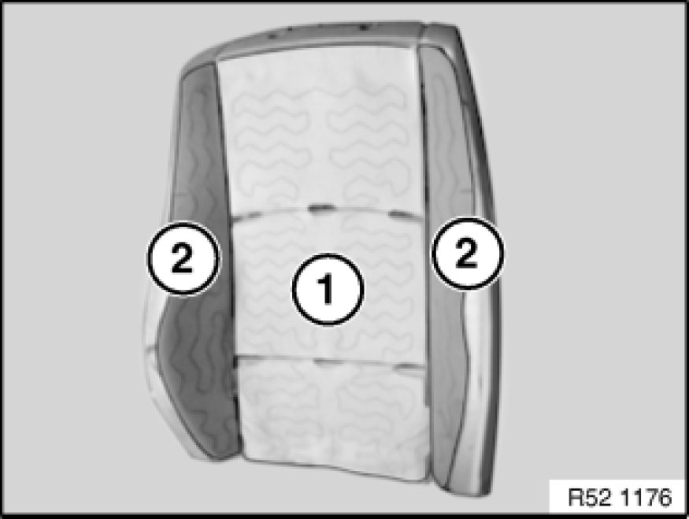
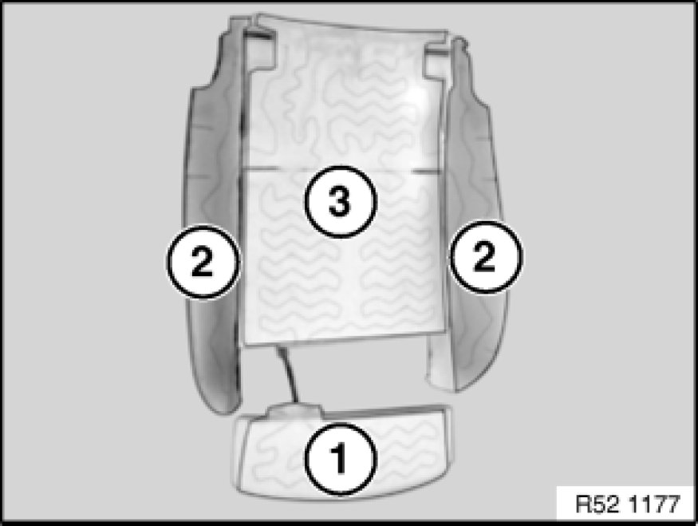

Replacing Heating Elements For Left or Right Front Seat (Sport / Manual)
52 15 455 - Replacing heating elements for left or right front seat (sport / manual)

Necessary preliminary tasks:
- Remove seat fabric Replacing Seat Cover for Left or Right Front Seat (Sports/Electric)
- Remove backrest cover Replacing Backrest Cover on Front Left or Right Seat (Sports/Electric)
- Remove thigh support cover Removing and Installing/Replacing Thigh Support Cover on Front Seat (Sport/Manual)
Note:
Heating elements are bonded with a foam section and cannot be separated from each other without causing damage.
Foam section and heating elements must be replaced.

Check new foam section:
- No obvious damage or material defects
- All trim wires present in foam
- No bubbles in foam section
- No dirt/contamination on foam or residual foam
- Pay attention to foam section on left and right
Check new heating mat:
- No obvious damage or material defects
- All tear-off film pieces presents
- Note variant by examining label on cable

Guide cable for backrest heating through foam hole.
Stick on main section (1):
- Pull adhesive film pieces off main section (1) and stick to upper edge of main section foam until flush
Stick on bead section (2):
- Pull adhesive film pieces off bead section (2) and stick on heating mat along bead section edges.
- Press down evenly in outwards direction

Guide cable for seat heating through foam hole.
Stick on STV heating mat (1):
- Pull off adhesive film and stick to rear foam edge until flush
Stick on bead section (2):
- Pull adhesive film pieces off bead section (2) and stick on heating mat along bead section edges.
- Press down evenly in outwards direction
Stick on main section (3):
- Pull adhesive film pieces off main section (3) and stick to upper edge of main section foam until flush
Check laying of heating mats:
- Heating mats laid without folds
- Heating mats correctly positioned
- All bonding surfaces stuck on
Note:
Carry out function test Performing Function Check with Adapter Cable (for Seat Repairs)